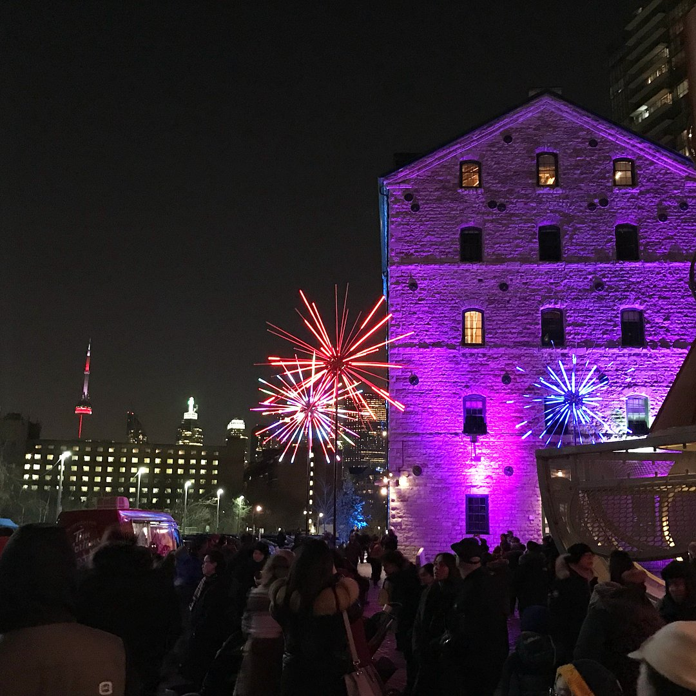
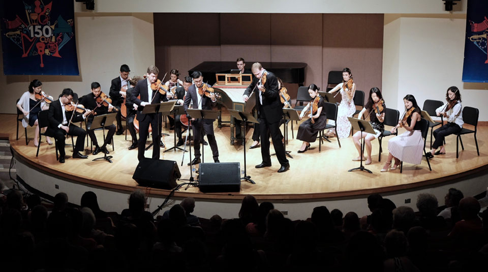
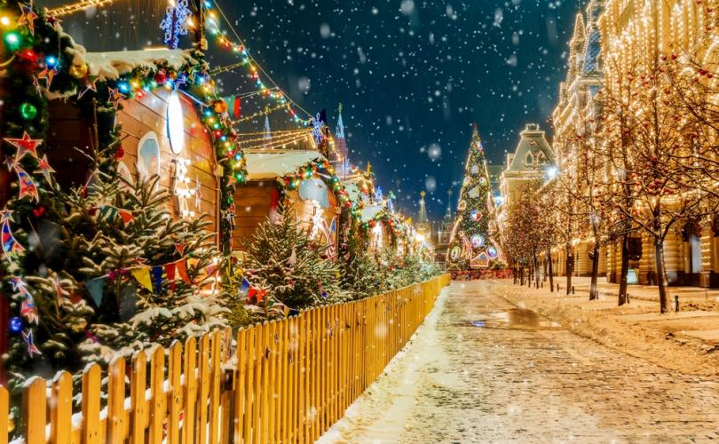
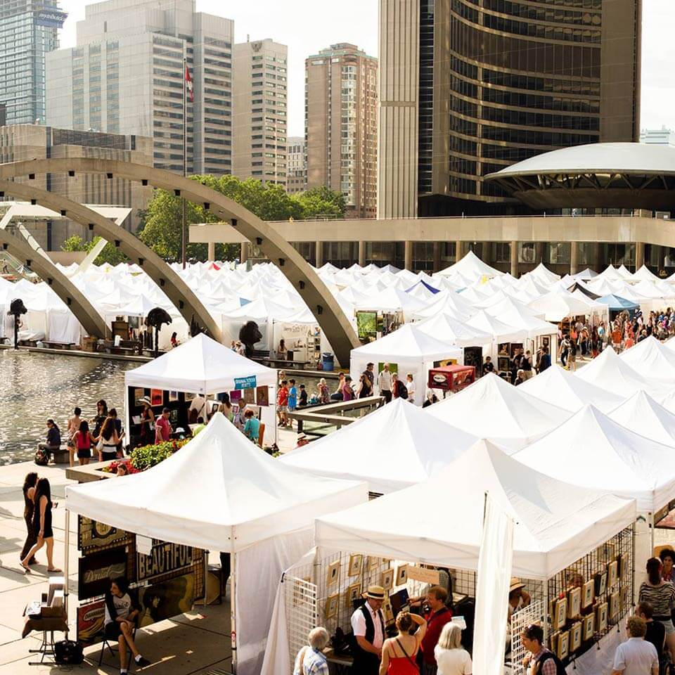
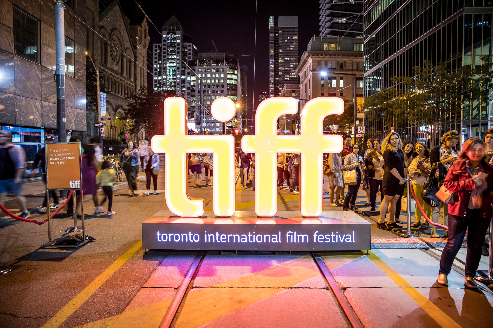

Every year, Toronto hosts plethora of major events, including cultural programs and celebrations to highlight the vibrant and diverse nature of the city, thereby attracting tourists from around the world and even promoting local and national artists.
The Toronto Light Festival
Illuminating the long winter nights with distinct works from both the local and international light artists, the Toronto Light Festival lights up the Distillery Historic District from January to March. Visitors are taken on a eye-catching journey as the festival transforms the picturesque historic neighbourhood into a large open-air gallery.
Toronto Summer Music Festival
Entering into its 12th season, Toronto Summer Music Festival (TSM) is one of the city’s most eagerly-awaited classical music event with concerts performed by Canadian and international artists, along with guest lectures and masterclasses.
Christmas Day
Being celebrated all over Canada and around the world, the grace and beauty of this festival in Toronto is something worth seeing. The Santa Claus Parade in Toronto is one of the oldest and largest Santa parades in the world. Celebrated on the 25th of December every year, this festival commemorates the birth of Jesus Christ.
Toronto Outdoor Art Fair
The Toronto Outdoor Art Fair offers a free and fresh-air alternative to conventional art shows and galleries. Over 300 artists participate and 100,000 visitors attend this fair every year. Moreover, established artists, undiscovered talents and innovative students showcase and sell their work directly to the public. It’s the best way to make connections with artists and their work.
Toronto International Film Festival
The biggest and brightest public film festival in the world takes over Toronto each September with world premieres, cutting-edge film, galas and industry schmoozes. Whether you’re a cinephile or just love to see the celebrities, Toronto during TIFF is the place to be.